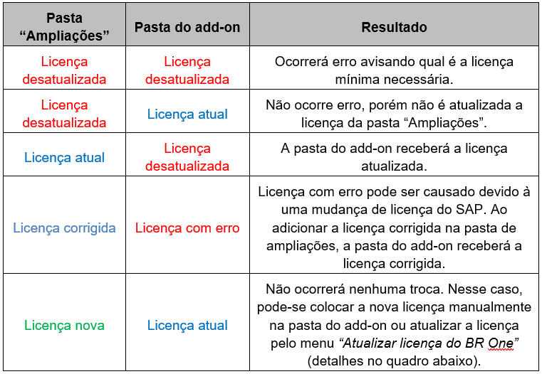
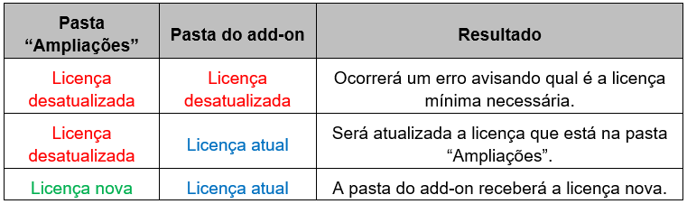
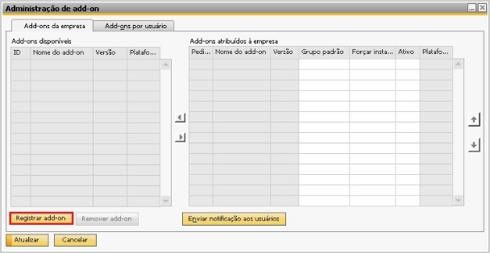
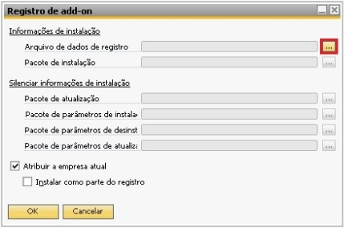
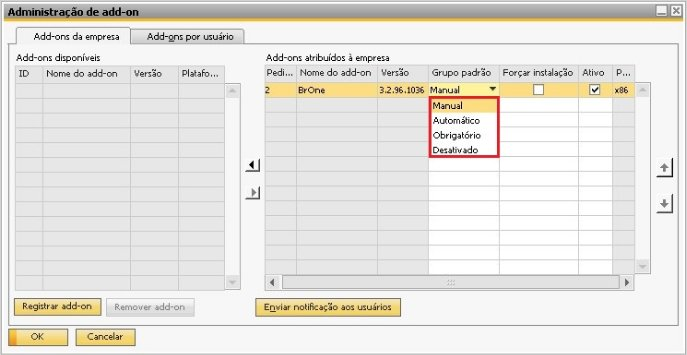

Instalação e Configuração do Add-On
Atualização de licença
Antes de iniciar a Instalação do BR One é necessário que seja incluído na pasta “Ampliações” do SAP o arquivo de licenças do BR One (“AuthBROne.dll”) atualizado para a versão utilizada. A pasta de “Ampliações” deve ser uma pasta do Servidor onde todos os clients tenham acesso de leitura. Esta pasta pode ser localizada ou definida em: “Administração/Inicialização do sistema/Configurações gerais”.
Em um client SAP 32bit a licença deverá ser colocada na raiz da pasta Ampliações. Para um client SAP 64bit deve ser colocada na subpasta AuthBROne_x64 dentro da pasta Ampliações.
Após a Instalação (detalhada em tópico seguinte) a licença será automaticamente baixada desta pasta para a máquina onde o client SAP está instalado.
Alternativamente em caso de problemas ao acessar esta pasta, esta licença pode ser manualmente copiada diretamente para a pasta do add-on, devendo apenas ser respeitado a respectiva plataforma (32bit/64bit) para definir qual licença deverá ser copiada.


Na Aba caminho > pasta de ampliações.

Atualizar na inicialização:
Pasta Ampliações, Pasta do add-on, Resultado
Atualizar pelo menu:
Pasta Ampliações Pasta do add-on Resultado
Processo de registro e Instalação
Processo de registro
O processo de registro do add-on faz com que este fique cadastrado na base SBO-COMMON e possa ser utilizado por todas as empresas (BD) existentes no mesmo servidor de BD da base SBO-COMMON.
Para isto seguir os passos seguintes:
Acessar a tela de Administração de add-on, acessando os menus Administração/Add-Ons/Administração de add-on, conforme a imagem abaixo:

Após entrar na tela, clique no botão Registrar add-on para que seja apresentada a tela Registro de add-on, conforme a imagem abaixo:
Clique no botão […] e localize a pasta com os arquivos de Instalação. Selecione o arquivo BROne.ard.
Após selecionar o arquivo, marque o flag Instalar como parte do registro, conforme a imagem abaixo:

Caso não seja feito a Instalação neste momento, deverá ser posteriormente realizado no menu Administrador add-on.
Processo de Instalação
O processo de Instalação faz com que além de ser registrado, que seja feito a Instalação local na máquina (client) a que está sendo feito o registro do add-on, logo o add-on poderá ser utilizado nesta máquina.
Para o processo de Instalação, pode ser dado continuidade ao processo de registro (Instalar como parte do registro), conforme tópico anterior, ou ser a Instalação de um registro anterior (menu “Administrador add-on”).
Para continuidade ao processo de registro, deve-se clicar em OK e a Instalação do Add-on iniciará automaticamente (conforme tela abaixo). Na tela seguinte, clique em “Avançar”.

Será mostrado o caminho onde o add-on será instalado. Clique em Instalar. Será exibido a seguinte mensagem:

Após o processo de Instalação ser completado, clique em Concluir para finalizar. Caso seja a primeira vez que o add-on esteja sendo instalado, ao iniciar o mesmo será solicitada as credenciais de banco de dados conforme informado na mensagem de “Pós – Instalação”.

Grupo padrão
Na tela de Administração de add-on é possível escolher o Grupo padrão de inicialização do add-on.
Por padrão, em uma primeira Instalação o add-on ficará desativado. Caso seja uma atualização manterá a configuração anterior. Existem quatro opções de configuração: Manual, Automático, Obrigatório e Desativado.
Manual: O usuário terá que iniciar o add-on manualmente quando achar que é necessário.
Automático: O add-on iniciará automaticamente sempre que for efetuado logon no sistema.
Obrigatório: O add-on será iniciado automaticamente e o usuário não tem a opção de parar o add-on. Significa que o add-on ficará ativo todo o tempo que o usuário estiver logado no sistema. Esta deve ser opção preferida para a maioria das empresas. Isto garante que sempre todos os processos customizados estarão ativos.
Desativado: O add-on não será iniciado.
A opção escolhida acima será padrão para todos os usuários do sistema. Caso algum usuário possua uma regra específica poderá ser tratado na aba “Add-ons por usuário”, exceto quando a opção “Obrigatório” for padrão, pois nesse caso as opções da coluna “Preferências” estarão indisponíveis para alteração.
Na imagem a seguir será feito o tratamento específico para um usuário quando a opção selecionada não for “Obrigatório”.
Na tela de “Administração de add-on”, na aba “Add-ons por usuário”, deverá ser selecionado o usuário em que deseja atribuir uma regra específica e alterado na coluna “Preferências” para opção desejada e atualizado esta tela.

Quando este usuário logar no SAP o add-on será iniciado conforme a regra definida para o mesmo.